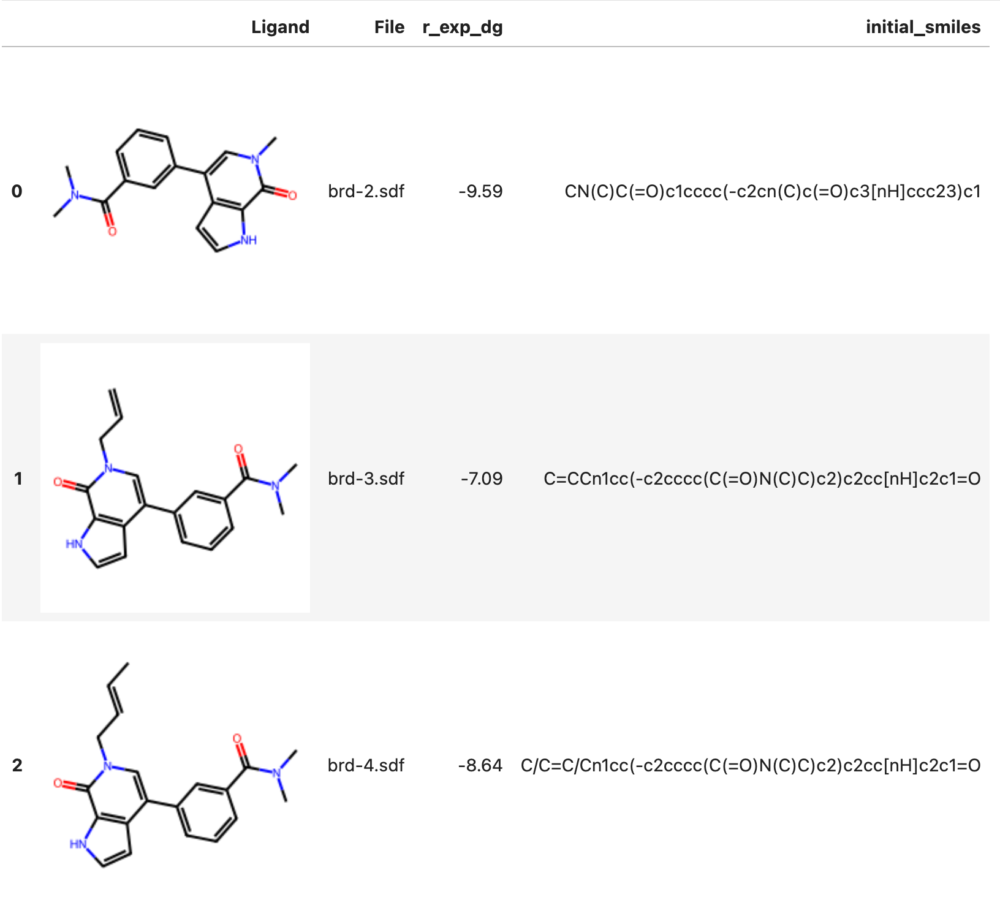

Getting started with the Drug Discovery toolbox¶
This document describes how to use the Drug Discovery toolbox to perform docking and run ABFE and RBFE runs on Deep Origin.
Prerequisites¶
Make sure you have installed, configured, and authenticated with the Deep Origin python client.
Recommended installation method
We recommend using these instructions to install the Deep Origin python client.
Following these instructions will install the deeporigin client in an isolated environment using uv, and will start a Jupyter instance that you will need for the rest of this tutorial.
Input data¶
Docking, ABFE, and RBFE require a protein to be in a PDB file as input.
Ligands can be imported from SDF files or SMILES strings. To run ABFE and RBFE, the ligand must be in a SDF file.
Example data
If you want to explore these tools using some example data, we provide the BRD4 protein and a few ligands. This is built into the deeporigin package and can be accessed using:
from deeporigin.drug_discovery import BRD_DATA_DIR
Creating a Complex object¶
The core of the Drug Discovery toolbox is the Complex class, that acts as a container for a protein and a set of ligand.
The Complex object can be created using:
from deeporigin.drug_discovery import Complex, BRD_DATA_DIR
# here, we're using the example data directory
sim = Complex.from_dir(BRD_DATA_DIR)
Inspecting the Complex object¶
Inspecting the object shows that it contains a protein and 8 ligands:
from deeporigin.drug_discovery import Complex, BRD_DATA_DIR
sim = Complex.from_dir(BRD_DATA_DIR)
sim
Expected output
Complex(protein=brd.pdb with 8 ligands)
Viewing the protein¶
The 3D structure of the protein can be viewed using the built-in show method in the Protein class:
from deeporigin.drug_discovery import Complex, BRD_DATA_DIR
sim = Complex.from_dir(BRD_DATA_DIR)
sim.protein.show()
This generates a 3D visualization of the protein, similar to:
Listing Ligands¶
We can further inspect the ligands by inspecting the ligands attribute:
from deeporigin.drug_discovery import Complex, BRD_DATA_DIR
sim = Complex.from_dir(BRD_DATA_DIR)
sim.ligands
Expected output

Jupyter notebooks
It is assumed that you are working in a Jupyter notebook (or similar IPython environment). This makes it easier to run the workflow, and some functions assume that you are in a Jupyter notebook.
Viewing Ligands (3D structures)¶
We can also view a table of 3D structures as follows:
from deeporigin.drug_discovery import Complex, BRD_DATA_DIR
sim = Complex.from_dir(BRD_DATA_DIR)
sim.ligands.show()
That's it! We are now ready to perform docking, ABFE, and RBFE.